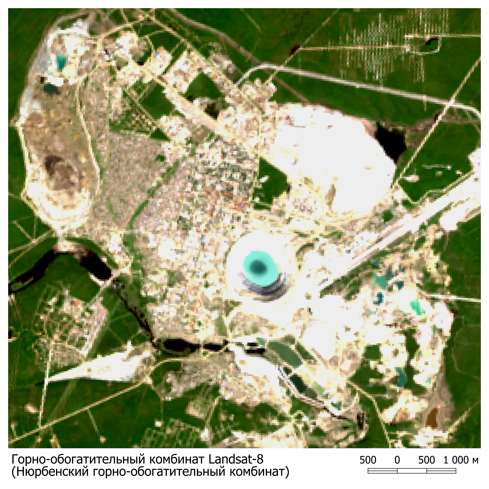
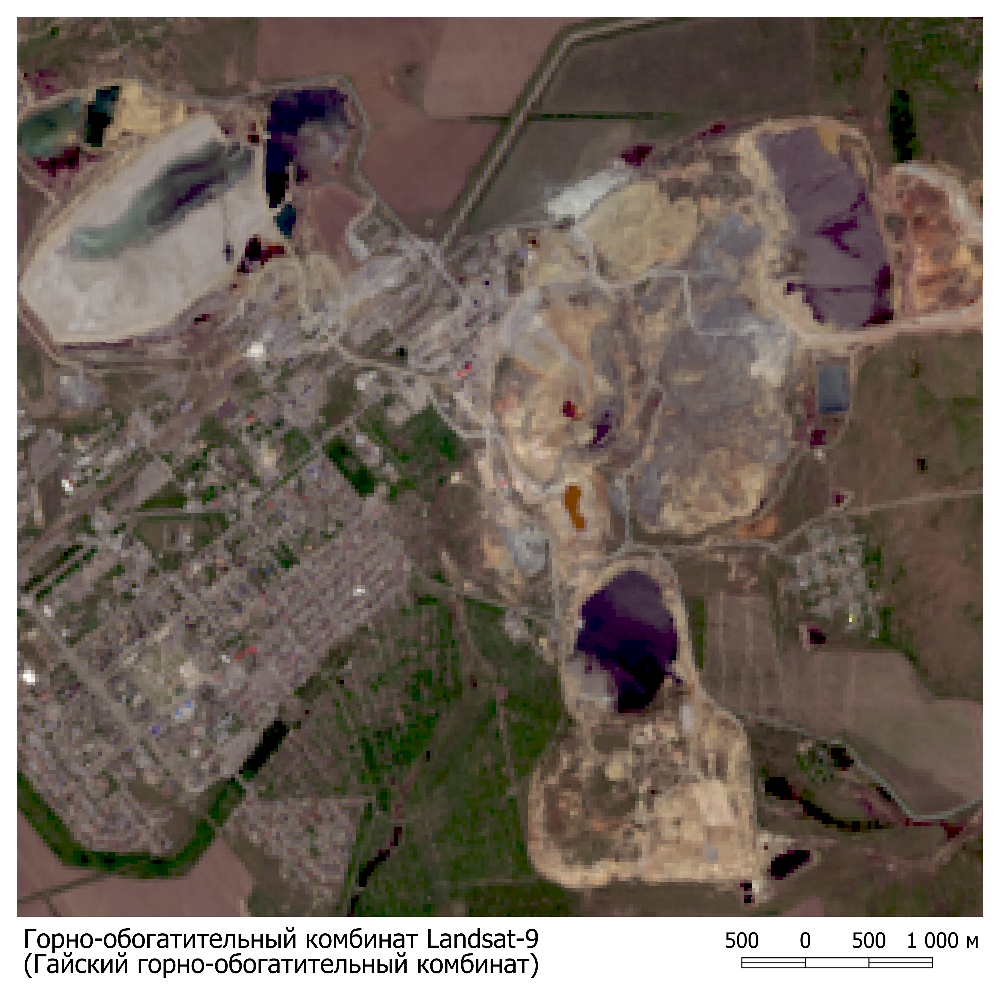
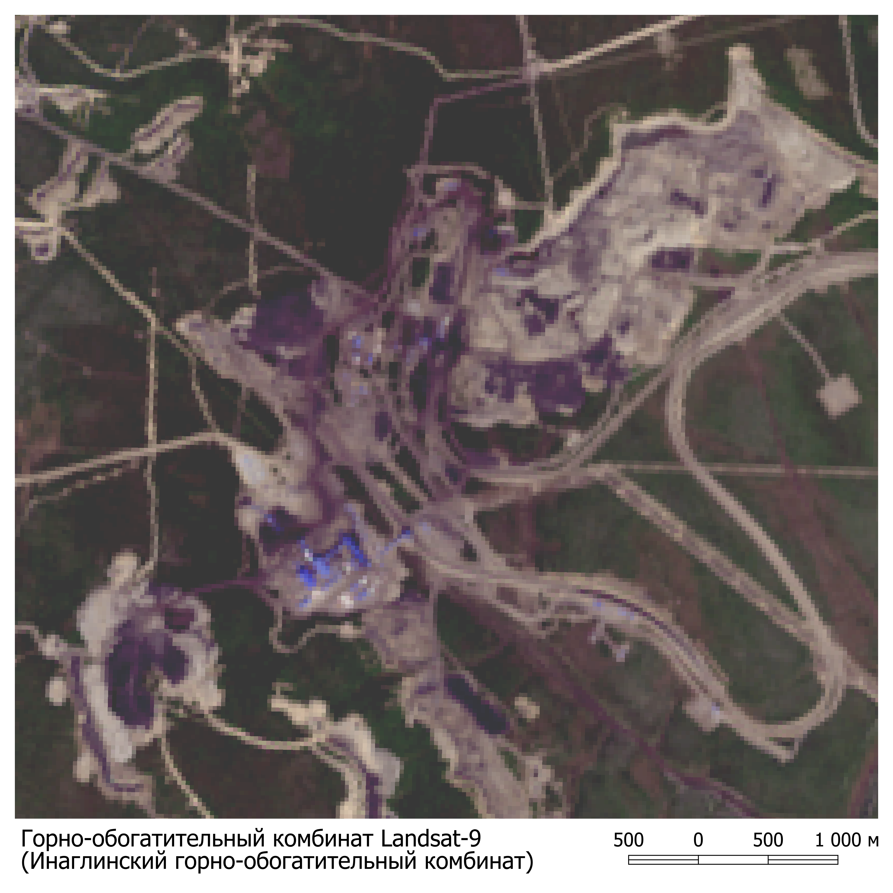
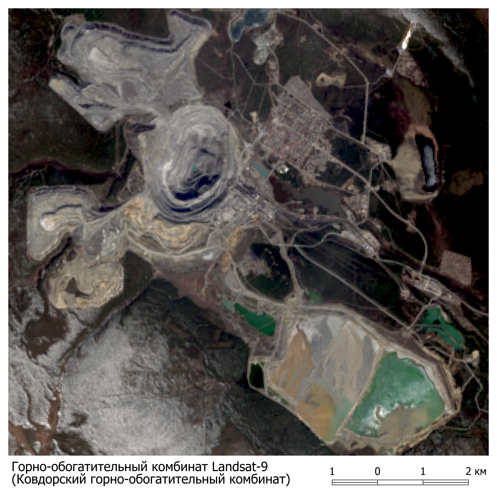
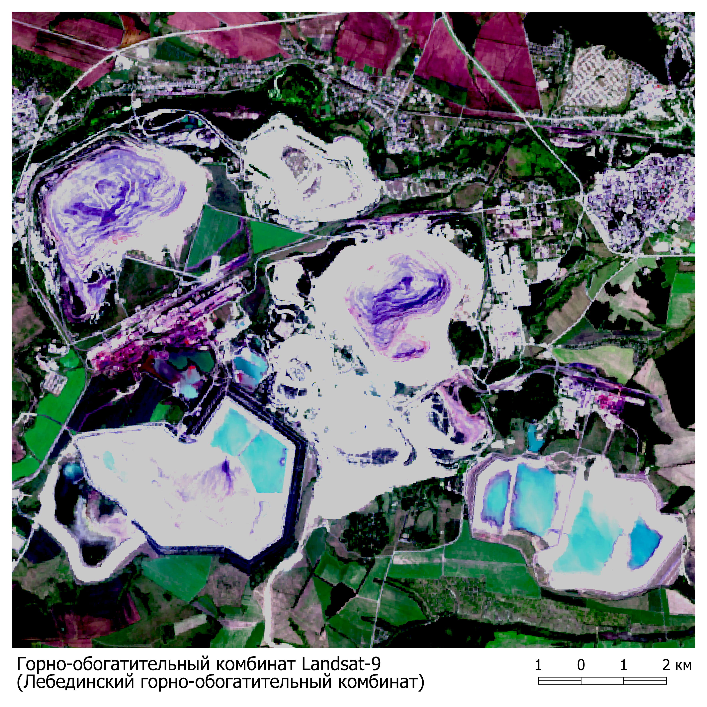
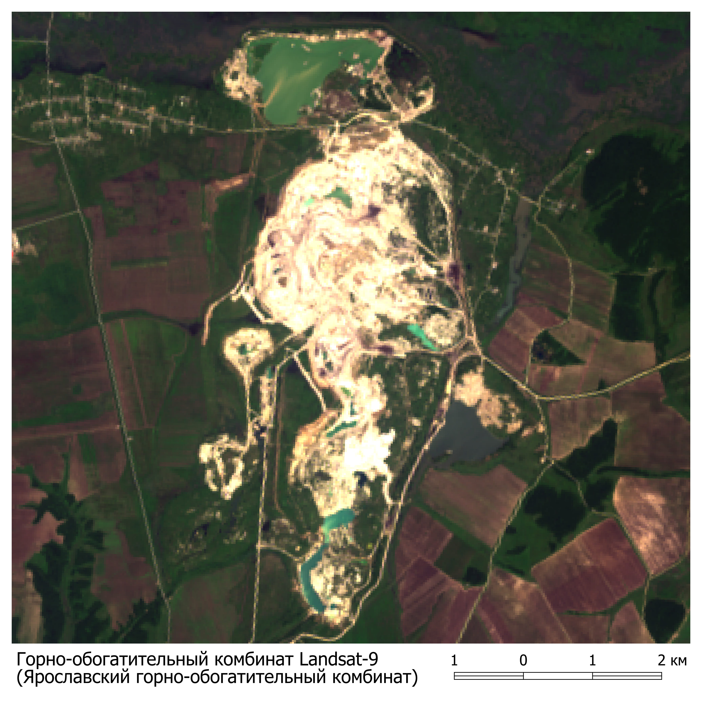

Медногорский медно-серный комбинат
Этот снимок был сделан спутником и показывает состояние экологической зоны. Данные снимки позволяют ученым анализировать и отслеживать изменения в экосистемах, выявлять проблемные зоны и разрабатывать меры по их защите.
.png)
Нюрбенский горно-обогатительный комбинат
Этот снимок был сделан спутником и показывает состояние экологической зоны. Данные снимки позволяют ученым анализировать и отслеживать изменения в экосистемах, выявлять проблемные зоны и разрабатывать меры по их защите.
Гайский горно-обогатительный комбинат
Этот снимок был сделан спутником и показывает состояние экологической зоны. Данные снимки позволяют ученым анализировать и отслеживать изменения в экосистемах, выявлять проблемные зоны и разрабатывать меры по их защите.
Инаглинский горно-обогатительный комбинат
Этот снимок был сделан спутником и показывает состояние экологической зоны. Данные снимки позволяют ученым анализировать и отслеживать изменения в экосистемах, выявлять проблемные зоны и разрабатывать меры по их защите.
Хрустальненский горно-обогатительный комбинат
Этот снимок был сделан спутником и показывает состояние экологической зоны. Данные снимки позволяют ученым анализировать и отслеживать изменения в экосистемах, выявлять проблемные зоны и разрабатывать меры по их защите.

Ковдорский горно-обогатительный комбинат
Этот снимок был сделан спутником и показывает состояние экологической зоны. Данные снимки позволяют ученым анализировать и отслеживать изменения в экосистемах, выявлять проблемные зоны и разрабатывать меры по их защите.
Лебединский горно-обогатительный комбинат
Этот снимок был сделан спутником и показывает состояние экологической зоны. Данные снимки позволяют ученым анализировать и отслеживать изменения в экосистемах, выявлять проблемные зоны и разрабатывать меры по их защите.
Сорский горно-обогатительный комбинат
Этот снимок был сделан спутником и показывает состояние экологической зоны. Данные снимки позволяют ученым анализировать и отслеживать изменения в экосистемах, выявлять проблемные зоны и разрабатывать меры по их защите.

Ярославский горно-обогатительный комбинат
Этот снимок был сделан спутником и показывает состояние экологической зоны. Данные снимки позволяют ученым анализировать и отслеживать изменения в экосистемах, выявлять проблемные зоны и разрабатывать меры по их защите.
